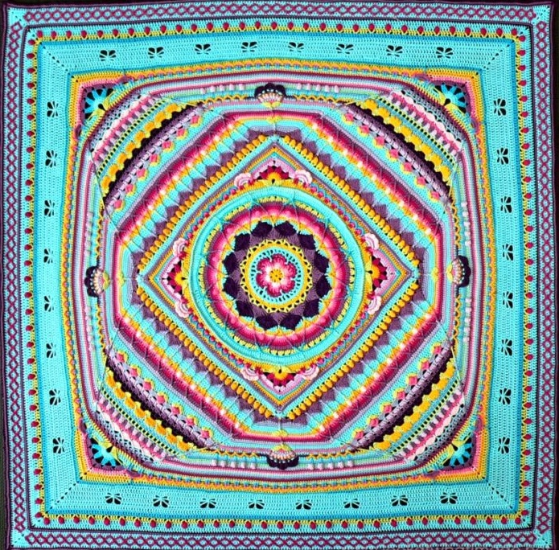
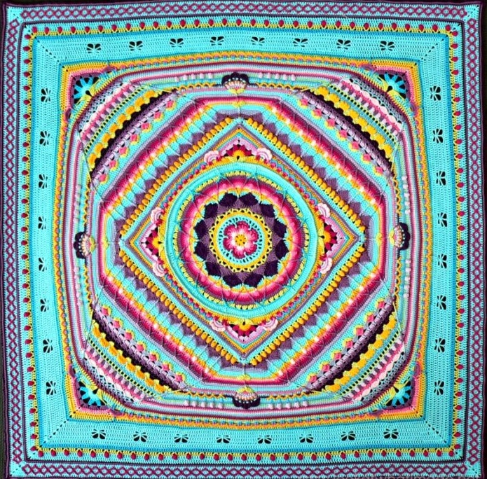

Harmony Mandala Journey
Welcome, brave crocheter, to the Harmony Mandala journey! Prepare for loops, twirls, and a meditative tangle of fun. Completing this blanket may lead to bragging rights, a cozy masterpiece, and a suspiciously large pile of leftover yarn.
Follow this journey to create your very own mandala blanket, complete with textures, colors, and beautiful stitches. Use the navigation above to explore each stage.
The Harmony Mandala Blanket is a stunning, textured crochet CAL (Crochet-Along) designed to inspire creativity and mindfulness. Known for its beautiful combination of intricate stitches, layered patterns, and vibrant color transitions, this blanket encourages crocheters of all skill levels to explore new techniques while creating a cozy, eye-catching masterpiece.
Each round of the Harmony Mandala Blanket introduces unique textures and designs, from delicate loops and shells to bold clusters and spirals, offering a meditative and rewarding crochet experience. With every stitch, you’ll build not just a blanket, but a colorful expression of your patience, creativity, and love of crochet.
Perfect for curling up with on a chilly evening or gifting as a heartfelt handmade treasure, the Harmony Mandala Blanket is a project that transforms yarn into art.
Special Thanks
- Look at What I Made – Sophie's Universe CAL 2015 Information
- Rebekah Haas – Sophie's Universe CAL Pattern Review
- Ravelry – Sophie's Universe CAL

 
